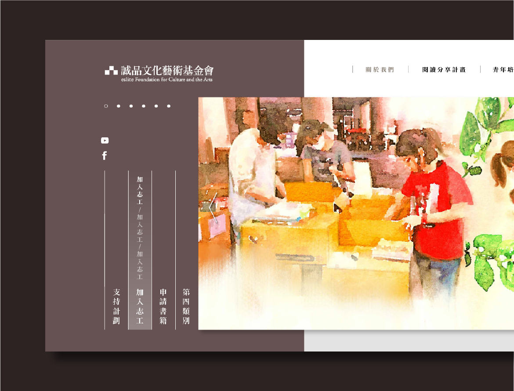

About Me
Yuting Liao
back to top


Eslite Foundation for Culture and Arts

THE CLIENT
誠品文化藝術基金會以推廣閱讀為核心使命，將誠品二十多年來所累積的文化資源擴大整合回饋社會，期望灑下書的種子、灌溉閱讀習慣的養分，在這片土地上耕耘出遍地書香的人文社會。
誠品文化藝術基金會以推廣閱讀為核心使命，將誠品二十多年來所累積的文化資源擴大整合回饋社會，期望灑下書的種子、灌溉閱讀習慣的養分，在這片土地上耕耘出遍地書香的人文社會。
KEYWORDS
互動設計/網頁設計/視覺傳達
互動設計/網頁設計/視覺傳達
THE OBJECTIVE
誠品文化藝術基金會為誠品旗下非營利組織，主要透過官方網站來推廣閱讀計畫、募集志工與書籍等相關業務，本次專案主要需求為翻新舊官網視覺，傳達文化感，並且加強業務功能。
誠品文化藝術基金會為誠品旗下非營利組織，主要透過官方網站來推廣閱讀計畫、募集志工與書籍等相關業務，本次專案主要需求為翻新舊官網視覺，傳達文化感，並且加強業務功能。
THE SOLUTION
為了與誠品本身的品牌形象維持一致性與區別，在網站內大量運用低彩度暖色調色彩，並且客戶希望使用者可直觀看到基金會各項活動的影像紀錄，考量到基金會所希望營造的文化氛圍，本次專案將這些照片進行重繪，運用水彩的手繪質感表現人文氣息的溫度，
為了與誠品本身的品牌形象維持一致性與區別，在網站內大量運用低彩度暖色調色彩，並且客戶希望使用者可直觀看到基金會各項活動的影像紀錄，考量到基金會所希望營造的文化氛圍，本次專案將這些照片進行重繪，運用水彩的手繪質感表現人文氣息的溫度，
初版設計